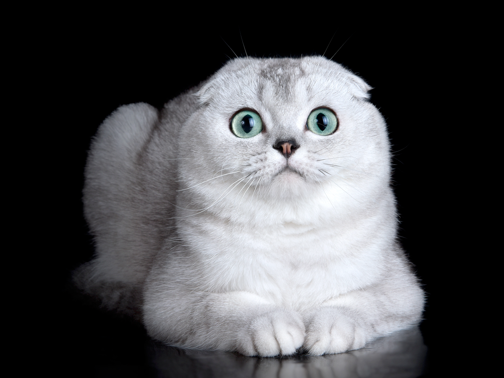

У світі є лише одна порода висловухих кішок – шотландська. Можна знайти оголошення про британських висловухих вихованців, але офіційно цієї породи не існує! Плутанина з’явилася через схрещування «британців» та «шотландців». Вони схожі зовні з допомогою такої генетики. Висловухість буває одинарною, подвійною та потрійною. Останній тип вважається найціннішим.

Тіло кішок середніх розмірів з розвиненою мускулатурою. Самки важать 4-5 кг, самці – 8-10 кг. Шия міцна, лапи масивні, овальні. Хвіст товстий, короткий, до кінчика звужується. У кішок з притиснутими вухами голова куляста, з пухкими щоками, горбатим носом та масивним підборіддям. Очі великі, широко розставлені. Вовна плюшева, густа, буває короткою та довгою.
Протирати регулярно, ватним тампоном очі, щоб вони не сльозилися, підрізати пазурі-ось які процедури проводять з вихованцем. На цьому догляд можна закінчити і розповісти про харчування, воно не доставить проблем – висловухі шотландські коти вкрай невибагливі. Підбирати треба збалансований корм, рекомендований ветеринаром чи заводчиком. З людської їжі кіт потребує відвареного морського окуня або варені яловичину, курятину, користь принесуть крупи (пшоно або вівсяні пластівці) і сир. Сире м’ясо або жирні продукти висловухим котам заборонено!